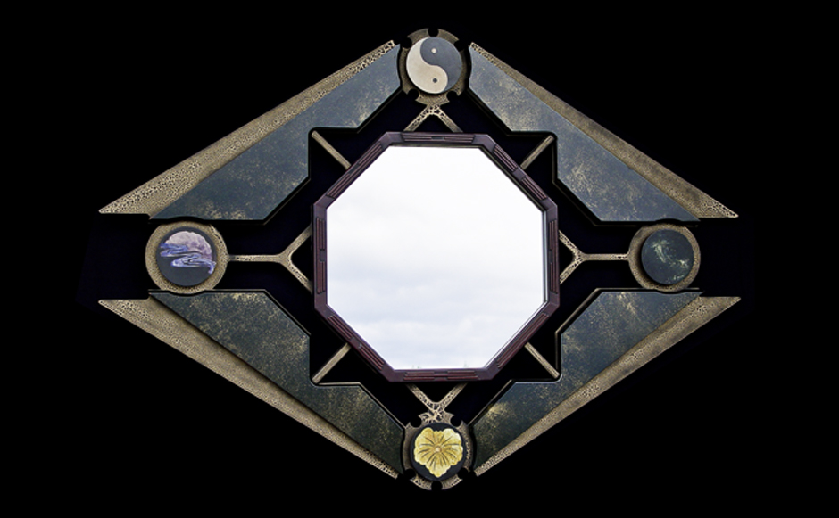
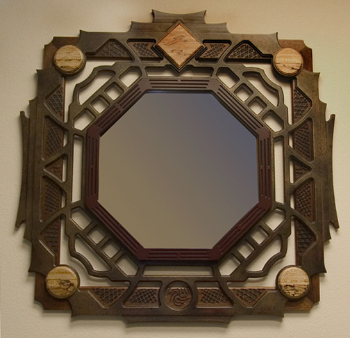
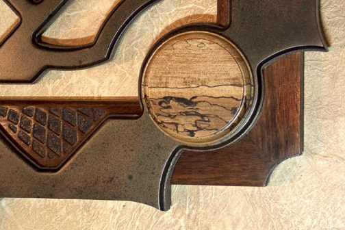
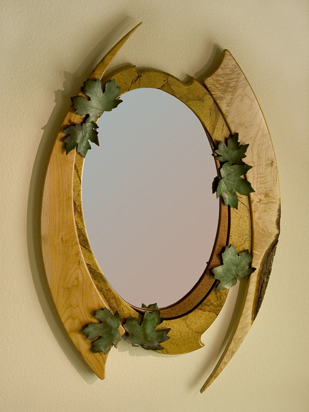

A curated collection of handcrafted mirror frames carved by CNC in the late 1990s and early 2000s.
Each piece blends traditional woodworking with early digital craftsmanship.

My personal favorite. I wanted to blow up the traditional 4-square-corner frame of the past and reveal a new concept for corners. Designed over many weeks and fully created in one magical day.

Another Ba-Gua inspired mirror frame built in many layers.

Close-up of above frame.

Collaborative piece with a ceramic artist. Natural wood and faux painted layers with ceramic leaves.